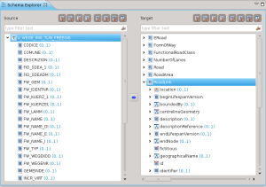
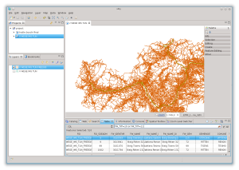
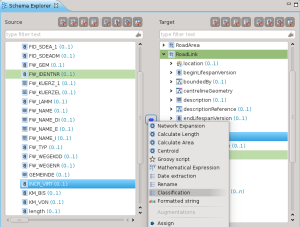
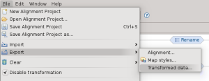

Archivio per la categoria ‘Strumenti’
11 novembre, 2013 | di Giancarlo Antonello
Ho molto pensato se scrivere o no queste poche righe, perché potrebbe sembrare che lo facessi per “sponsorizzare” un progetto che a me piace; alla fine ho deciso che in ogni occasione ci sono i maligni e quelli in buona fede e così vi invio queste mie considerazioni, pensando che apparteniate alla seconda categoria.
Sono più di tre anni che uso geopaparazzi, cioè fin dalla sua nascita con i suoi bachi e i suoi problemi. Mi sento onorato di aver contribuito allo sviluppo di questo software, sia pure in modo passivo, nel senso che non ho scritto neppure una linea di programma ma ho testato il software in lungo e in largo per i miei bisogni di turista fai da te.
Due anni fa, durante una vacanza in un’isola greca con mia moglie, seguendo con la cartina del luogo un sentiero segnato male ci siamo persi.

Fortezza di Antimachia a Karadameno, Isola di Kos. Geopaparazzi su HTC Wildfire.
Erano le tre del pomeriggio e c’era il sole, ma … fortunatamente avevo scattato molte foto e aiutandomi un po’ con le immagini e un po’ con il ricordo dell’orografia del luogo riuscimmo, per altra via e con tre ore aggiuntive, a ritornare al luogo di partenza. Mi dissi: mai più dovrà ripetersi un caso analogo!
E da quel giorno geopaparazzi mi segue ovunque.
Vi scrivo alcuni accadimenti banali, ma credo significativi, per far capire ai vostri lettori eventualmente interessati come sia utile questo strumento.
- Mia moglie ed io per i nostri viaggi ci affidiamo regolarmente al sito booking.com. Di solito sono abbastanza precisi, ma… vi lascio intendere dalla email che mia moglie ha mandato al sito durante le vacanze:
“Gentili Signori, siamo utenti di booking.com e abbastanza soddisfatti del servizio che viene riservato. Tuttavia abbiamo un’osservazione da fare: essendo dotati di GPS per rintracciare agevolmente la struttura dove andremo a pernottare, abbiamo rilevato che le strutture alberghiere a Kalymnos -vedi hotel Panorama- ed a Astypalaia -vedi studio Ixthioessa- ma anche altre di cui abbiamo verificato la posizione (vista mare studios: sulla vostra mappa è segnalato in collina ed invece è a un centinaio di metri dal porto), sono segnalate nelle vostre mappe a distanze variabili da 500 a 1000 metri rispetto alla posizione reale. E’ importante che le coordinate GPS corrispondano alla posizione reale della struttura perchè è anche in base alla posizione della stessa che si fa la scelta.
Ixthioessa ad Astypalaia: sulla Vs. mappa: lat 36.54874 lon 26.35278 a noi risulta lat: 36.54978 lon: 26.35557
Vi chiediamo di verificare e rettificare le posizioni.
Cordiali saluti luciana a.”
-
Quest’estate ero a cercar funghi con un gruppo di amici; all’ora di tornare alla base l’opinione sulla via del ritorno da prendere non era esattamente condivisa: alcuni dicevano “di qua” altri “di là”. Prendemmo una delle due direzioni e, fatti pochi metri, il mio amico geopaparazzi mi mostrò che la direzione era sbagliata. Ovviamente la rettifica fu immediata e alcuni amici si mostrarono interessati a quello strumento.
Al ritorno verso l’albergo, guidati da geopaparazzi, nella Barcellona notturna.
- Ero in ferie con mia moglie a Barcellona (ebbene sì, sono spesso in giro perchè sono in pensione da dodici anni ormai) per la prima volta, e visitando la città è difficile rendersi conto di quanto passi velocemente il tempo se non quando si accendono le illuminazioni stradali e improvvisamente ci si sente sperduti. Naturalmente in una città non c’è rischio di perdersi (taxi e indirizzo dell’albergo risolvono tutti i casi) ma l’idea di vedere anche aspetti della città notturna ci piaceva e così ci permettemmo una serata tarda in luoghi qualsiasi con la certezza che geopaparazzi ci avrebbe riportati a casa. In albergo mia moglie mi disse “regala 50€ per una pizza a chi ha sviluppato quel marchingegno (proprio così disse: marchingegno!)” e così feci: non succede spesso che una donna apprezzi così apertamente certa tecnologia ….
-
Un amico camminatore con poca esperienza delle montagne del meranese mi chiese un giorno di indicargli un bel percorso in alta quota. Stavo per raccontargli una delle mie gite, quando mi venne l’illuminazione. “che cellulare hai?” gli chiesi. Mi fece vedere un HTC. “Magnifico” dissi. E gli spiegai come scaricare Geopaparazzi, come vedere i percorsi in Google Earth, ecc. ecc.. “Ti manderò via e-mail le istruzioni per usare quel software insieme al file del percorso che stavo per raccontarti. Se avrai problemi, telefonami”. Ci lasciammo così e gli inviai quanto promesso. Era un mercoledì (lo ricordo perchè la storia è recente) e il lunedì successivo mi arrivò una sua e-mail carica d’entusiasmo sia per il luogo visto che, soprattutto, per la semplicità con cui aveva potuto seguire il percorso.
Potrei raccontare ancora per molto, ma credo di aver superato il limite di tolleranza di ogni buon lettore “scientifico”.
Nel frattempo il mio hardware si è evoluto. L’HTC era troppo lento e spesso “crashava” per la mia impazienza a spostare le mappe sul monitor. In giugno 2013 mi sono regalato un Samsung Galaxy Note2 N7100: una bomba!!! Ci ha accompagnati ad Astypalea (Grecia) senza un attimo di incertezza. Sarà la ns. guida fino a quando… non sarà diventato troppo lento anche lui.
Ci sono ancora alcune cose che mi piacerebbe veder fare a geopaparazzi ma mi rendo conto che non posso sempre chiedere e mai dare. Sono sicuro, tuttavia, che l’autore di geopaparazzi continuerà, come nel passato, a curare lo sviluppo e la manutenzione di questo software che ormai chiamo “geofriend” e prima o poi i miei desideri saranno esauditi perchè saranno diventati necessità per molti.
Per finire un consiglio ai turisti fai da te: è sempre bene viaggiare anche con una cartina della zona, oltre che con geopaparazzi: qualche volta batterie e/o satelliti giocano brutti scherzi…
Grazie per l’ospitalità sul Vostro guest post e per la vostra attività su TANTO.
Posted in GuestPost, Strumenti | 5 Comments »
21 maggio, 2013 | di Giovanni Allegri
Da alcuni giorni, come reso noto dalla notizia di lancio, sulle pagine di OpenStreetMap è attivo un nuovo strumento per l’editing online delle mappe. L’ultimo arrivato, nella grande famiglia degli editor per OSM, sia chiama iD e andrà ad affiancare il buon vecchio Potlach, noto a chiunque abbia fatto un po’ di inserimenti e di modifiche sui dati OSM.
Si tratta di uno strumento che, a fronte della leggerezza e della chiarezza a livello di interfaccia utente, nasconde una discreta dose di tecnologia, tutta Open Source, nata dal lavoro volontario di alcuni sviluppatori, e proseguita con un notevole sostegno economico (parte dei 545.000 $ offerti dalla Knight Foundation), sotto il coordinamento di MapBox.
L’aspetto più evidente di iD, e che ne ha motivato la realizzazione, è un approccio “assistito” all’editing. Ogni azione viene guidata tramite suggerimenti e le scelte degli oggetti, e delle relative proprietà, da associare agli elementi geometrici inseriti, viene semplificata con l’ausilio di moduli d’inserimento intuitivi e facilmente comprensibile anche ai meno esperti, lasciando tuttavia la libertà di integrare le informazioni di base con tag più avanzati.
Ma cos’è che ha spinto la Knight Foundation e MapBox a finanziare questo progetto? La notizia ha colto l’attenzione anche di testate giornalistiche non del settore quali Mashable e TechCrunch, ed entrambi hanno voluto sottolineare la sfida alle altre realtà commerciale del mapping online, Google in primis. In effetti la mossa operata con l’introduzione di iD ha reso ancor più evidente il mix di qualità del progetto OpenStreetMap : open data, strumenti tecnologici efficaci e robusti, crowdsourcing a scala globale, opportunità commerciali. Le ho elencate in quest’ordine non per caso.
La scelta, operata fin dall’inizio, di associare al dato OSM una licenza aperta (inizialmente CC-BY-SA, poi trasformata in ODbL) è stata senz’altro il carburante che ha dato il via al tam-tam globale, garantendo agli utenti una totale trasparenza sull’impiego dei dati liberamente forniti. Questa caratteristica, oltre ad essere motivante per molti utenti, è unica tra i progetti di mapping crowdsourced a scala globale (Google Map Maker, per dirne uno, i dati se li tiene ben stretti!).
La totale trasparenza e il pubblico dominio hanno fornito una forte spinta motivazionale, tanto all’utente amatore quanto agli sviluppatori e ai sistemisti. Lo sviluppo di un set di tecnologie ben focalizzate ed efficaci in grado di gestire tutte le fasi di vita del dato, e di intercettare e rispondere ad un’utenza estremamente variegata (dall’azienda, all’operatore in aree di emergenza, al byker appassionato), ha avviato il circuito virtuoso. Ecco che dal computer di Steve Coast, OSM ha invaso il mondo.
Con quali soldi è stato possibile realizzare tutto ciò, e chi sostiene oggi OSM? Qui sta l’emblematicità di OSM, e che io ritrovo esemplificata nella nascita di iD: un progetto nel quale tutti possono trarre benefici, dagli utenti appassionati alle aziende (fino alla scala di Foursquare, Evernote, MapQuest, la stessa MapBox e tante altre). E più tutti ne traggono beneficio, più ognuno è disposto a contribuire: l’utente a mappare, l’azienda a fare il proprio business col supporto dei dati OSM e a sostenere il progetto (se l’azienda è saggia e lungimirante!). OSM sarà un caso un po’ unico, soprattutto di questa portata, ma dimostra, insieme ad altri progetti simili (basta pensare a Wikipedia) che è un processo realizzabile e sostenibile, con un modello di business non utopico.
In sintesi, e semplificando un po’, un buon editor rende la vita più semplice all’utente, e magari ne attrae di nuovi -> MapBox può contare su una maggiore base di contributori e di dati -> MapBox sostiene lo sviluppo di iD
Chissà se un giorno riusciremo a innescare un processo virtuoso simile anche per gli Open Data in Italia
Buona mappatura a tutti con iD!
Giovanni Allegri
Posted in Strumenti | No Comments »
18 febbraio, 2013 | di Andrea Antonello
Nel corso del 2012 ho avuto il piacere di collaborare al progetto FreeGIS. Il mio compito è stato quello di testare l’usabilità di un particolare software di mappatura di schemi di dati per mappare e successivamente convertire un set di dati della provincia di Bolzano verso lo schema di dati INSPIRE.
Considerato che ogni volta che scrivo la parola INSPIRE mi tremano le mani e ogni volta che ne parlo mi trema la voce, è stata un’esperienza interessante, anche al fine di smitizzare e abbattere alcuni muri, nonché confermare alcune assurdità che la complessità degli standard porta inevitabilmente con sé.
La certezza che ora ho è che la migrazione di dati verso gli schemi INSPIRE è una procedura molto complessa, ma non impossibile, e che richiede freddezza nella preparazione e personale capace e aggiornato da un punto di vista tecnico.
Io in generale non credo ai software dall’unico pulsante magico.
Credo però nel senso di una procedura guidata. Credo in un software che possa semplificare i passaggi importanti di tale procedura, supportando soprattutto la leggibilità degli schemi di dati e la consistenza delle mappature che si vanno ad operare.
Humboldt & Hale
Il software che ho avuto modo di testare (e poi anche estendere) si chiama Humboldt Alignment Editor (Hale per gli amici) e nasce da un progetto europeo che ha coinvolto 26 partner fra il 2006 e il 2011 (fra i quali gli italiani di CNR-IREA, GISIG, Telespazio e dell’Università di Roma). Il progetto Humboldt si è occupato principalmente dell’armonizzazione dei dati a livello europeo. Data la moltitudine e diversità dei dati presenti nelle varie organizzazioni europee, naturalmente non si trattava di re-inventare la magia nera, bensì di creare strumenti che potessero supportare il processo di implementazione.
Dal progetto Humboldt è nato il Data Harmonization Panel (DHP), una piattaforma di esperti nell’armonizzazione dei dati spaziali. Lo stesso DHP si pone tutt’oggi due importanti obiettivi:
- lo sviluppo ed il supporto degli strumenti sviluppati in Humboldt
- il supporto di un framework di formazione
Del progetto Humboldt oggi viene sviluppato in modo attivo praticamente solo la componente Hale. Il progetto è rilasciato con licenza Free ed Open Source alla community per facilitarne l’interazione ed il miglioramento.
E’ proprio la natura open del progetto che mi ha portato prima ad avvicinarmi a Hale attraverso FreeGIS e poi, in un secondo momento, quando ho avuto il piacere di essere chiamato a svilupparne alcune funzionalità nel team geospaziale del Fraunhofer IGD (attuale centro di coordinamento del progetto).
E’ stata questa collaborazione che mi ha ispirato a scrivere un articolo riguardante Hale in modo da renderlo un pochino più noto al di fuori della cerchia accademica e dei progetti europei.
Ma bando alla storia e passiamo alla parte pratica.
Utilizzare Hale
Per mostrare il funzionamento di base di Hale mi rifarò in parte al progetto FreeGIS usando i dati della Provincia di Bolzano e descritti nel eGeo, il geoportale della provincia. Mi riferirò in particolare al set di dati di quello che è definito in INSPIRE RoadLink dello schema dei TransportNetwork.
Per chi volesse cimentarsi, è possibile scaricare Hale dall’area di download del sito del progetto per i sistemi operativi più diffusi.
Una volta lanciato, Hale si presenta in questo modo:

Le parti più importanti sono indubbiamente le viste dello Schema explorer e dell’Alignment.
Hale è stato concepito per mappatura di strutture di dati molto complesse, fra schemi di dati xml come lo possono essere ad esempio gli schemi CityGML. Il nostro esempio non renderà onore a questo potenziale, in questa sede si vuole piuttosto introdurre lo strumento in generale.
Definire lo schema di arrivo
La prima cosa da definire, è lo schema verso il quale si desidera mappare lo schema dei dati originali. Nel nostro caso si parla di dati del TransportNetwork, quindi è necessario caricare lo schema xml del RoadTransportNetwork di INSPIRE. Tale schema è scaricabile qui.
Una volta scaricato sul proprio disco rigido, è possibile importarne la definizione dal menu di import attraverso l’operazione target schema:

definendo poi nella procedura guidata il file da importare:

per poi trovarsi lo schema visualizzato nella sua struttura ad albero in Hale:

Da poco sono stati aggiunti alcuni schemi preconfigurati legati a INSPIRE, che si possono trovare nella tab denominata presets. Nel nostro caso lo schema di interesse è presente:

Definire lo schema di partenza
La definizione dello schema di partenza può essere una procedura semplice o molto complessa, dipendentemente dal formato in cui si sono mantenuti i propri dati (e questa è indubbiamente una scienza a parte). Hale permette l’import dello schema da file, ma anche da servizi WFS. Per set di dati molto semplici è possibile generare uno schema estraendolo da shapefile.
Come per il target schema, partendo nuovamente dal menu di import, procediamo ad importare il source schema:

per trovarci con la seguente situazione:

Nell’immagine la selezione è stata poi posizionata sui due tipi da mappare.
Come mappare gli schemi
Mappatura del tipo
La prima operazione da fare, è quella della mappatura dei tipi principali, in questo caso V_WEGE_IMS_TUN_FREEGIS verso il RoadLink INSPIRE.
Il dato di partenza pero’ contiene tutto il transport network (strade, ferrovie, etc), quindi bisogna procedere a creare una regola per estrarre solo le strade.
Con un GIS questa operazione è abbastanza triviale. In uDig l’operazione può essere fatta con il linguaggio CQL (Constraint Query Language).
Ad esempio ponendo delle condizioni sul campo giusto possiamo isolare le ferrovie:

oppure, cosa necessaria al nostro esempio, le strade:

Il motivo per il quale vi cito uDig è duplice. Perché è il GIS con il quale lavoro e che supporto in modo attivo, ma anche perché Hale supporta lo stesso identico linguaggio CQL.
E’ quindi possibile creare un condition context:

usando come condizione esattamente la stringa testata in uDig:

A questo punto Hale crea un nuovo tipo in base alla condizione imposta e sarà quello che verrà mappato attraverso un’operazione di Retype:

Una volta conclusa la procedura guidata, la mappatura sarà visualizzata nello schema explorer e nella vista dell’Alignment:

Mappatura degli attributi
Non voglio tediarvi con la descrizione dei vari attributi, quindi riassumerò solo alcune operazioni che si possono applicare per la mappatura degli attributi
Formattazione di stringhe

Permette di concatenare le stringhe dei diversi campi dello schema di partenza e delle costanti aggiunte manualmente per creare una stringa nello schema di arrivo:

Appena applicata la mappatura, viene visualizzata nella Alignment View e la vista delle proprietà ci fornisce una descrizione dell’operazione applicata:

Classificazione
La classificazione è forse una delle operazioni più importanti, permette di mappare classi di valori.

Un esempio molto semplice è la mappature fra dei valori interi 0/1 al loro booleano nello schema di arrivo:

Mappatura della geometria
E’ possibile eseguire la mappatura di geometrie:

Il tipo nel nostro caso è lo stesso, quindi una operazione di rename è sufficiente:

Non mi spingo oltre con la descrizione del processo di mappatura. Accenno solo al fatto che è possibile utilizzare anche degli script, cioè dei frammenti semplificati di programmi, che rendono possibili trasformazioni personalizzate molto complesse.
Controllo mappatura e trasformazione dati
Una volta conclusa la mappatura, la vista delle trasformazioni è quello che fa per noi. Ci permette di dare una controllata finale al grafico della trasformazione

e la possibilità di caricare un set di dati per eseguire una trasformazione secondo la mappatura precedentemente prodotta.
La procedura di import dei dati è simile a quella degli schemi, selezionando source data come tipo di import:

Il file da importare nel caso di questo esempio è lo stesso usato per definire lo schema:

Una volta importato il dato, viene visualizzato nella parte bassa dell’applicativo un set di esempio di dati originali e trasformati. Questo è molto utile per avere un idea dell’effettiva bontà della mappatura:

E’ infine possibile esportare il dato trasformato in formato GML, come richiesto da INSPIRE. Dal menu di export

è possibile accedere alla procedura guidata che definisce il formato di output e poi esegue l’operazione di export:

Conclusioni
Non è facile scrivere un breve articolo riguardante strumenti così complessi. Me ne sono reso conto in modo sempre più decisivo durante la stesura di questo articolo.
Spero comunque di essere riuscito a suscitare interesse per Hale.
Spero che sia evidente l’importanza di avere uno strumento aperto e trasparente in processi di questo tipo. Personalmente starei attento a generare dipendenze da software chiusi e proprietari in processi complessi quali la migrazione dei dati. Queste procedure infatti si protraggono anche per parecchio tempo; non di rado passano per sperimentazioni, tentativi e possibili cambi di attori. Un software aperto a tutti – invece – permette maggiore autonomia e dà la possibilità, volendo, di seguire i processi a tutti i livelli desiderati. Non va dimenticato che in questi contesti è spesso necessario adattare lo strumento a casi specifici, quindi avere la possibilità di estenderlo e modificarlo può essere una carta vincente.
Spero infine che sia chiaro che la trasformazione di dati fra schemi non è una cosa impossibile (in caso la fatica sta nell’apprendere gli schemi INSPIRE). Ci sono strumenti validi a supporto e Hale - a mio avviso - è uno fra questi. Esorto le amministrazioni a cercare gli esperti dei dati sul proprio territorio e non affidarsi a softwarehouse che promettono il fatidico pulsante magico… non è realistico. I professionisti locali del settore conoscono bene lo stato dei dati e le reali problematiche ad essi legati e nessuno più di loro desidera che i dati migrati siano della giusta qualità.
Infine, ai temerari e amanti del genere lascio il link al video informativo reso disponibile dal DHP, nel quale vengono introdotti i tutorial inseriti dentro a Hale sotto forma di procedure guidate, che ne facilitano l’apprendimento.
Posted in osgeo, Strumenti | 5 Comments »
11 dicembre, 2012 | di Andrea Antonello
All’inizio di novembre mi arrivo’ una comunicazione riguardante il rilascio di SpatiaLite per Android. Il mittente era Sandro Furieri, ben noto per essere il padre di SpatiaLite, nonché il presidente di GFOSS.
Era un periodo tutt’altro che ideale, stavo faticando a preparare la presentazione per il GFOSS day, che si sarebbe tenuto solo pochi giorni dopo.
Ma considerato che la mia presentazione avrebbe tentato di fare una sorta di cronologia del mercato mobile e il punto riguardo alla questione Android e GFOSS, non potevo ignorare una questione che ritengo cambierà le sorti dello spatial sul mobile. Quindi passai qualche notte a integrare SpatiaLite in Geopaparazzi.
Durante la presentazione che diedi alla conferenza:
mostrai solo una schermata nella quale Geopaparazzi dialogava con papà Furieri, chiedendogli delle trasformazioni di coordinate (si veda slide 50).
Ma da quel momento in poi non sono più riuscito a smettere di pensare al formato raster+vettoriale per lo scambio di dati fra sistemi operativi e dispositivi diversi.
Con SpatiaLite sarebbe stato finalmente possibile visualizzare nelle mappe di Geopaparazzi non solo punti e linee semplici, ma anche poligoni e grandi set di dati. Gli indici spaziali sarebbero stati d’aiuto, ne ero sicuro.
Quindi iniziammo ad implementare un nuovo piano in Geopaparazzi: il piano dei dati di tipo SpatiaLite.
E i primi risultati, usando i dati del progetto Natural Earth erano promettenti:
Natural Earth in Geopaparazzi
In itinere producemmo anche un breve tutorial per sviluppatori che volessero cimentarsi. Lo potete trovare qui.
Testammo la nuova versione su diversi dispositivi e in campo per un lavoro nelle paludi finlandesi, mentre validavamo i limiti dei bacini estratti durante le analisi idrolo-geomorfologiche. E visto che funziono’ cosi’ bene, decidemmo di rilasciare la versione, anche se non la si può ancora definire ottimizzata.
La seguente schermata mostra la sovrapposizione di una mappa di orienteering finlandese con i risultati delle analisi idrologiche: i limiti del bacino e i corsi d’acqua vecchi, nuovi e quelli estratti:
Mappe raster e vettoriali finlandesi
Avete notato la nuova icona sotto le icone di zoom? Quello e’ il pulsante per interrogare i dati. E’ possibile tracciare un rettangolo con le dita e l’applicazione mostra gli attributi degli oggetti compresi:
Interrogazione degli attributi su dati vettoriali
Questo ovviamente apre un nuovo mondo per Geopaparazzi ma in generale per lo sviluppo mobile geospaziale.
Un ringraziamento speciale va a Sandro per l’aiuto con l’ottimizzazione delle query spaziali e il supporto nello sviluppo praticamente in tempo reale.
Questa indubbiamente e’ la novità maggiore di Geopaparazzi 3.4.0, ma in realtà ve ne e’ una seconda abbastanza importante. In questa release e’ supportata anche la lettura di tag RFID via tecnologia NFC oppure bluetooth. La funzionalità e’ stata esposta all’utente all’interno delle schede personalizzate:
Scheda di rilevamento di tag RFID
E’ possibile inserire nelle schede un pulsante per la lettura del tag. Premendo il pulsante, si apre la schermata di scansione:
Schermata di scansione tag RFID via NFC oppure bluetooth
E’ possibile leggere i tag RFID sia attraverso la funzionalità NFC del dispositivo, ma anche attraverso antenne esterne collegate via bluetooth.
Una volta che l’id del tag e’ stato letto, il campo della scheda verrà compilato.
Una nota dolente dell’aggiunta di Spatialite deriva dal fatto che il pacchetto Geopaparazzi cresce da meno di 2 megabyte a più o meno 9 megabyte. Non abbiamo dubbi riguardo al fatto che tutti gli utenti saranno comunque contenti, vista la fantastica aggiunta.
Credo sia tutto per questa release. Speriamo possiate apprezzarla!
E’ possibile scaricare Geopaparazzi da:

la documentazione utente per questa versione e’ disponibile nel WIKI del sito principale.
Posted in osgeo, Strumenti | 1 Comment »
7 settembre, 2012 | di Andrea Borruso
Qualche settimana fa mi trovavo in campagna con i miei colleghi per svolgere un rilievo con minidrone su un traliccio dell’alta tensione. Prima di partire facciamo sempre una serie di verifiche sulla completezza e sullo stato delle attrezzature, così come individuiamo su mappa il luogo in cui recarci. Cosa fatta anche in quest’occasione.
Si trattava di un solo traliccio, di cui avevo una coppia di coordinate, che avevo (un po’ di fretta) visualizzato su Google Maps. L’obiettivo era quello di ricavare rapidamente il percorso per arrivare a destinazione e nel contempo “leggere” rapidamente il territorio sfruttando la vista Satellite e quella Rilievo. A cosa fatta mi sembrava di avere un quadro completo.

Arrivati sul luogo, inizio però a sudare freddo: in prossimità del punto in questione ci sono infatti non uno, ma quattro tralicci. Su quale eseguire il rilievo? Non avevamo infatti informazioni sulla precisione delle coordinate ed inoltre sulla base fotografica che avevo consultato prima di partire i 4 tralicci erano pressoché invisibili. Ho provato quindi a rileggere la base fotografica sul campo e – a ben guardare – qualche pixel grigio che rappresentava i tralicci lo vedevo, ma le mie coordinate non corrispondevano in modo inequivocabile con nessuno di questi. Ne potevamo scartare certamente due su quattro, ma non c’era da stare allegri.
Decido allora, per disperazione e senza alcuna vera idea alle spalle, di lanciare geopaparazzi sul mio smartphone Android, e di leggere la base OpenStreetMap in corrispondenza della mia coppia di coordinate. Ingrandisco un po’ la vista e ”Resta di stucco: è unbarbatrucco”, sulla base OSM sono presenti i tralicci dell’alta tensione. Guardo un po’ meglio e le mie coordinate corrispondono esattamente ad uno dei 4 tralicci (sono i 4 quadratini bianchi che ho cerchiato in rosso). A quel punto è tornata la serenità e ci siamo messi a lavorare!!

Sto un po’ semplificando, ma non romanzando. Quanto visto sulla base OpenStreetMap non ci dava infatti alcuna vera certezza, perché non avevamo informazioni su precisione ed accuratezza delle coordinate a disposizione e la corrispondenza del punto mappa con la base OSM poteva essere assolutamente casuale. Di più, non avevamo sul campo nemmeno il tempo di verificare la bontà del dato vettoriale riportato su OSM. Avevamo però finalmente un riferimento di massima confortante, da usare per fare altre verifiche che ci dessero la certezza dell’oggetto da rilevare.
OpenStreetMap è stato quindi uno degli strumenti di lavoro di quella giornata.
Tutto questo è avvenuto grazie a diversi fattori, resi possibili e/o in qualche modo alimentati dalla cultura e dalla comunità che sta dietro ad OSM e da alcuni dei pilastri su cui si poggiano il mondo dell’open-data e dell’open-source.
OpenStreetMap è infatti “un progetto che crea e fornisce dati cartografici [...] liberi e gratuiti a chiunque ne abbia bisogno. Il progetto è stato avviato perché la maggior parte delle mappe che si credono liberamente utilizzabili, hanno invece restrizioni legali otecniche al loro utilizzo e ciò ne impedisce l’uso per scopi produttivi, creativi o inattesi.”
Oggi sembra tutto un po’ scontato, ma è stato il prerequisito che mi ha fatto pensare che potesse avere un senso leggere la base OSM; soprattutto per ciò che riguarda l’inatteso. Che cosa ci fanno infatti i tralicci dell’alta tensione in una base cartografica globale e non specialistica?
Una delle cose belle di OpenStreetMap è la libertà di inserire teoricamente qualsiasi strato informativo. I grossi provider di web-mapping forniscono dei servizi eccellenti da molti punti vista, ma gli strati informativi (tolti quelli di base) sono pochi. Ci sono infatti numerose informazioni sulle attività commerciali sparse nel territorio, perché si tratta di servizi orientati al business e alla pubblicità (delle Pagine Gialle globali) ed è raro trovare layer che non producano per gli stessi fornitori – in modo diretto o indiretto – un tornaconto economico. SuOSM invece chiunque può aggiungere qualcosa: gli alberi delle strade di Berna, sapere dove sono le Antilopi allo zoo di Berlino o per l’appunto i tralicci dell’alta tensione in provincia di Trapani. Ma bisogna essere un po’ fissati!
Scherzo, ma quando ho visto apparire i tralicci sulla mappa mi sono chiesto cosa porti un utente a mappare cose come queste. La risposta non è semplice e le ragioni possono essere le più varie. Sicuramente in OpenStreetMap viene sollecitata l’attitudine ad occuparsi del proprio “quartiere”, inserendo ad esempio i giornalai, le panchine, i cinema, i monumenti, i giardini pubblici, i sensi di marcia delle strade, ecc., delle aeree che si conoscono meglio; è un po’ come riempire di fiori le aride aiuole sotto casa. Tutto questo quasi sempre con il desiderio di eguagliare o superare altri utenti. Alle volte è soltanto il piacere di derivare dei dati (ad esempio da una foto aerea): si inizia da un traliccio, ci si prende gusto e si continua perché è molto piacevole “disegnare il mondo” e buttare un sassolino (anche molto più di uno) nel più grosso progetto di cartografia partecipata al mondo. Gli utenti attivi di OpenStreetMap sono pochi rispetto al numero totale, ma quando si inizia a mappare è difficile non essere presi da istinti monomaniaci. Cartografare su OSM è addictive, provate.
Dovevo anche, per la mia serenità, verificare qualità ed accuratezza del dato di quello specifico traliccio. Il database di OpenStreetMap non solo è predisposto per archiviare numerose informazioni sui dati inseriti, ma consente a chiunque di accedervi e di consultare alcuni metadati, come il nome dell’autore. Ed allora scoprire ad esempio che il traliccio in questione era stato caricato da David Paleino è stato un attimo. Gli ho scritto per saperne di più, soprattutto sapere da dove avesse derivato i dati. Mi ha risposto immediatamente e con la disponibilità e gentilezza che conoscevo già, fornendo informazioni per me fondamentali. Tutto questo è stato possibile soltanto perché il dato era corredato da informazioni liberamente accessibili.
L’entusiasmo e la competenza di David da soli non sarebbero bastati per tracciare i tralicci. Ha potuto farlo perché aveva le foto aeree di base da cui ricavare queste informazioni, ed in particolare perché il S.I.T.R. Sicilia consente di derivare dati dalle ortofoto regionali fornite in WMS. Queste foto hanno una risoluzione di 0.25 m. ed i tralicci si vedono molto bene (vedi foto sotto). Senza cartografia di base è molto difficile produrre dati derivati, e per fortuna l’attenzione al tema degli opendata geografici e sempre maggiore. In questo campo il movimento OpenStreetMap è sicuramente tra i pionieri.

Ho voluto raccontarvi questa storia, per le sue dimensioni e per la sua concretezza. Si tratta infatti di qualcosa di piccolo, nulla rispetto (ad esempio) all’adozione di OSM da parte di foursquare, ma che mi ha cambiato una giornata di lavoro.
Ringrazio la comunità OpenStreetMap, in particolare
David, per ciò che fanno. Se volete un’idea di quello che è capace di fare un utente come lui, guardate le sue statistiche OSM
qui o ancora meglio la sua
Heat Map: senza parole!
Posted in osgeo, Strumenti | 5 Comments »


{kind=link}
{kind=link}
{kind=link}
{kind=link}
{kind=link}
{kind=link}
{kind=link}
{kind=link}
{kind=link}
{kind=link}
{kind=link}